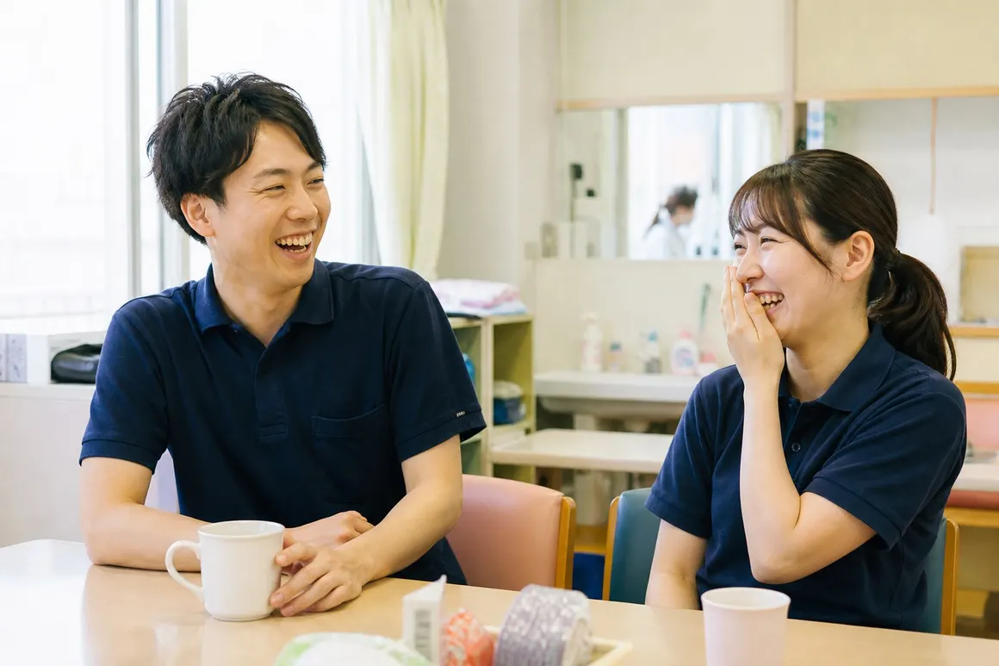

介護職員正職員・パート
| 仕事内容 | デイサービス・小規模多機能ホーム・グループホームでの食事や入浴の介助、レクリエーション、送迎、記録 |
|---|---|
| 応募資格 | 資格・経験は問いません（介護職員初任者研修は入職後に受講を支援します） |
| 給与 | 正職員 月給 21.5万〜27万円（処遇改善手当を含む・経験と資格により決定）／パート 時給 1,150円〜 |
| 勤務時間 | 日勤 8:30〜17:30／グループホームは早番・遅番・夜勤のシフト制 |

Message
あわいの森で働く職員には、ほかの業界から移ってきた人がたくさんいます。飲食店の店長だった人、工場で働いていた人、子育てが落ち着いて久しぶりに働き始めた人。
介助の方法や制度のことは、入ってから覚えれば大丈夫です。それより大切にしているのは、相手の話を最後まで聞けること、「ちょっと手伝って」と周りに言えることです。ひとりで抱えない働き方を、職員どうしでも続けています。
Work style
01
入職後はまず法人全体の研修を受け、その後3か月は決まった先輩と一緒に動きます。介護職員初任者研修や実務者研修の受講費は、法人が負担します。
02
シフト制の事業所でも、休みの希望は前の月の10日まで出せます。有給休暇は1時間単位でも取れるので、通院や子どもの行事にも合わせやすくしています。
03
本人の希望があれば、高齢から子育て、障がいから暮らしの相談へと、分野をまたいで異動できます。ほかの事業所への応援や見学も行っています。
Positions
| 仕事内容 | デイサービス・小規模多機能ホーム・グループホームでの食事や入浴の介助、レクリエーション、送迎、記録 |
|---|---|
| 応募資格 | 資格・経験は問いません（介護職員初任者研修は入職後に受講を支援します） |
| 給与 | 正職員 月給 21.5万〜27万円（処遇改善手当を含む・経験と資格により決定）／パート 時給 1,150円〜 |
| 勤務時間 | 日勤 8:30〜17:30／グループホームは早番・遅番・夜勤のシフト制 |
| 仕事内容 | ひとつぼし工房・こもれびでの作業や活動の支援、送迎、ご家族や関係機関との連絡 |
|---|---|
| 応募資格 | 普通自動車免許（AT限定可）。福祉の経験は問いません |
| 給与 | 月給 21万〜26万円（処遇改善手当を含む・経験と資格により決定） |
| 勤務時間 | 8:30〜17:30（土日祝休み） |
| 仕事内容 | 小規模保育園 こつぶでの保育、子育てひろば ぽけっとでの親子の見守りと相談 |
|---|---|
| 応募資格 | 保育士（子育てひろばは子育て支援員研修の修了者も可） |
| 給与 | 正職員 月給 22万〜27万円（処遇改善手当を含む）／パート 時給 1,200円〜 |
| 勤務時間 | 7:00〜19:00のうち8時間のシフト制 |
| 仕事内容 | 暮らし相談センター ともづなでの相談対応、支援計画の作成、関係機関との調整、家計改善の支援 |
|---|---|
| 応募資格 | 社会福祉士・精神保健福祉士のいずれか、または相談業務の経験がある方 |
| 給与 | 月給 23万〜29万円（経験と資格により決定） |
| 勤務時間 | 9:00〜18:00（土日祝休み） |
| 勤務地 | 富士市内の各事業所（通勤のしやすさと希望をうかがって決めます） |
|---|---|
| 休日 | 正職員は年間休日112日（シフト制の事業所は月9〜10日）／夏季・年末年始休暇あり |
| 待遇 | 社会保険完備／賞与 年2回／通勤手当（上限2万円）／資格手当／退職金制度／マイカー通勤可 |
| 試用期間 | 3か月（条件は本採用と同じ） |
Flow
お問い合わせフォームの「採用について」か、本部の電話でご連絡ください。応募の前の見学だけでもかまいません。
気になる事業所を、1時間ほど見ていただきます。職員と話す時間もとります。
面接は1回です。履歴書をお持ちください。職務経歴書はなくてもかまいません。
面接からおよそ1週間で結果をお知らせします。入職日はご都合に合わせて決めます。